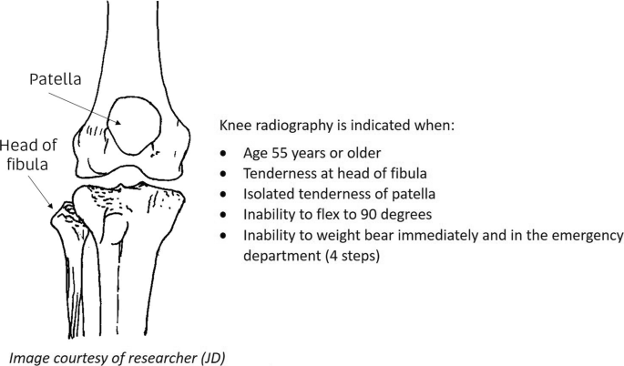

Explanations
Investigations — Option 1. Checking right knee AROM
Checking right knee AROM is necessary as the next step. In a patient with recent TKR who sustained a fall onto the prosthetic knee, a new extension lag (e.g., 20° lag not present in prior sessions) is a critical red flag for possible extensor mechanism disruption (quadriceps or patellar tendon rupture) or periprosthetic fracture. This objective mechanical deficit takes precedence over stable chronic lumbar symptoms and mandates urgent medical review rather than continuing routine outpatient assessment.
Investigations — Option 2. Checking back AROM in standing
Checking back AROM in standing is not necessary as the next step. The patient's low back pain is chronic, unchanged, and unrelated to the acute post-fall knee complaint. Repeating lumbar AROM adds no new diagnostic value when a higher-priority post-TKR mechanical issue exists and risks further damage (e.g., fracture propagation or implant loosening).
Investigations — Option 3. Observation of the right knee for inflammatory signs and/or deformity
Observation of the right knee for inflammatory signs and/or deformity is necessary as the next step. As possible extensor mechanism disruption or periprosthetic fracture is highly suspected in this case, observation for any deformity, swelling, and bruising might provide cues to support your clinical decision making on referring for medical evaluation.
Investigations — Option 4. Functional gait assessment
Functional gait assessment is not necessary as the next step. Assessing patient's ability to weight bear may provide supportive information for a suspected extensor mechanism disruption or periprosthetic fracture. However, weight bearing activities are contraindicated when AROM already reveals a clear red flag.
Treatment — Option 1. Continue previous treatments of back mobilisation exercises, general lower-limb strengthening, and functional training.
Continue previous treatments of back mobilisation exercises, general lower-limb strengthening, and functional training is not optimal. Ignoring the new post-fall knee trauma and objective extension lag risks exacerbating an undiagnosed periprosthetic fracture, implant loosening, or extensor mechanism rupture. Medical clearance before resuming loading is required when new mechanical symptoms appear.
Treatment — Option 2. Modify the session to focus on back and upper-limb exercises only; advise RICE for the right knee and review in 1 week.
Modify the session to focus on back and upper-limb exercises only; advise RICE for the right knee and review in 1 week is not optimal. Conservative modification with delayed medical review is unsafe. The history meets Ottawa Knee Rule criteria (age >55 years + trauma) and the new extension lag indicates possible structural failure and the need for urgent medical evaluation (Stiell et al., 1997).

Fig.1 Ottawa Knee Rule Criteria
Treatment — Option 3. Send the patient to the Accident and Emergency Department (AED) for further review and management.
Send the patient to the Accident and Emergency Department (AED) for further review and management is optimal. The combination of:
(1) fall onto the prosthetic knee
(2) persistent pain
(3) new extension lag constitutes red flags for periprosthetic fracture or extensor mechanism disruption.
Immediate AED referral ensures urgent X-ray (± CT) and orthopaedic assessment, which is the evidence-based standard to prevent long-term morbidity in elderly patients with prosthetic joints (Stiell et al., 1997).
Treatment — Option 4. Progress lower-limb strengthening with added right-knee-specific exercises (e.g., patellar mobilisations and quadriceps sets) while avoiding painful end-range movements.
Progress lower-limb strengthening with added right-knee-specific exercises (e.g., patellar mobilisations and quadriceps sets) while avoiding painful end-range movements is not optimal. Knee-specific loading or mobilisations are contraindicated until serious pathology is excluded. Forcing exercises on a potentially unstable TKR risks fracture propagation or implant damage.
Key Take Home Messages:
Always re-prioritise assessment and management when a new symptom arises, especially after trauma. Objective findings (extension lag) trump subjective improvement trends. Early medical referral protects patient safety and prevents avoidable complications. Document clearly and communicate handover details when referring to AED.
References:
Stiell, I. G., Wells, G. A., Hoag, R. H., Sivilotti, M. L., Cacciotti, T. F., Verbeek, P. R., Greenway, K. T., McDowell, I., Cwinn, A. A., Greenberg, G. H., Nichol, G., & Michael, J. A. (1997). Implementation of the Ottawa Knee Rule for the use of radiography in acute knee injuries. JAMA, 278(23), 2075-2079. https://doi.org/10.1001/jama.1997.03550230051036
Case Creator: Gigi Cheung
← Back to Homepage